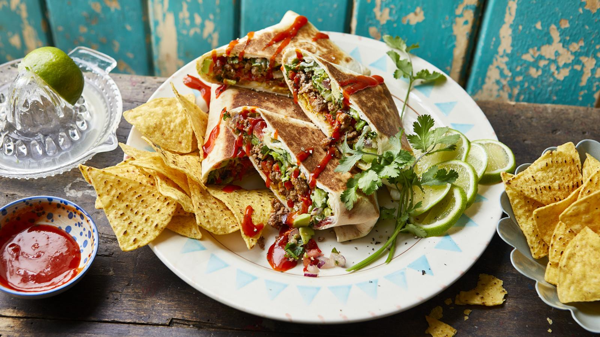

Nacho beef Burrito

Description
This simple nacho beef burrito goes from pan to plate in less than 20 minutes. High protein, full of flavour and with a surprise crunchy centre.
Ingredients
- 1 tbsp olive oil
- 500g lean beef mince
- 2 tbsp fajita seasoning
- 1 red pepper(deseeded and finely sliced)
- 1/2 red onion(finely chopped)
- 1 tomato(finely chopped)
- 1 avocado(peeled, stone removed and finely chopped)
- handfull fresh corriander
- 1/2 little gem lettuce(shredded)
- 1-2 limes(juice only)
- 2 tbsp soured cream
- 4 large flour tortillas
- 35g mature chedder
- 2 handfulls of tortilla chips
- pinch of salt
- hot sauce of your choice to serve
Method
- Heat the oil in a large frying pan, over medium-high heat, and tip in the mince. Fry for 3–4 minutes until browned, breaking the mince up well with the back of a wooden spoon.
- Add the fajita seasoning, red pepper and 2 tablespoons water. Fry until the pepper has softened slightly, then turn off the heat. Set aside.
- Mix together the onion, tomato, avocado, coriander and lettuce in a bowl. Season with the lime juice and pinch of salt and set aside.
- Spread 1 tablespoon soured cream on each tortilla wrap, sprinkle over the cheese, add a few spoonfuls of the lettuce mixture, and then top with the beef mixture.
- Crumble a handful of the tortilla chips on top of each wrap, then fold in the corners and tightly roll up each wrap into a burrito, taking care to keep everything tucked in.
- Heat a dry frying pan and toast each burrito on all sides until crisp and golden. Enjoy with lots of hot sauce.